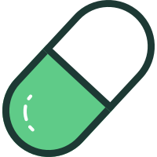

<!doctype html>
<html lang="zh-CN">
<head>
  <meta charset="utf-8">
  <meta name="viewport" content="width=device-width, initial-scale=1">
  <title>GMGN Fomo Pump Panel</title>
  <link rel="stylesheet" href="src/panel.css">
</head>
<body class="side-panel-page">
  <aside class="fomo-panel">
    <header class="fomo-header">
      <div class="fomo-token-avatar" data-role="token-avatar"></div>
      <div class="fomo-token-copy">
        <div class="fomo-token-name" data-role="token-name">GMGN Fomo Pump Panel</div>
        <div class="fomo-token-symbol" data-role="token-symbol">等待 GMGN Token…</div>
      </div>
      <div class="fomo-market">
        <div class="fomo-market-cap" data-role="market-cap">— MC</div>
        <div class="fomo-change neutral" data-role="change-24">—</div>
      </div>
    </header>
    <nav class="fomo-tabs" aria-label="Fomo token tabs">
      <button type="button" class="active" data-tab="holders">Holders</button>
      <button type="button" data-tab="feed">Feed</button>
      <button type="button" data-tab="about">About</button>
    </nav>
    <main class="fomo-body">
      <div class="fomo-content" data-role="content"></div>
    </main>
    <section class="fomo-pump-notice" data-role="pump-notice" aria-live="polite" hidden>
      
      <span><strong>Pump 数据未连接</strong><small>打开 Pump 检查会话，连接成功后提示会消失</small></span>
      <a href="https://pump.fun/?tab=friends" target="_blank" rel="noopener noreferrer">打开 Pump ↗</a>
    </section>
    <footer class="fomo-footer">
      <span data-role="status">Waiting for a GMGN token…</span>
      <span class="fomo-footer-actions">
        <label class="fomo-tracking-toggle" title="把当前关注地址的交易推送到 GMGN 追踪；关闭后停止获取">
          <input type="checkbox" data-role="tracking-toggle" aria-label="关注交易推送到追踪" checked>
          <span>推送追踪</span><i aria-hidden="true"></i>
        </label>
        <button type="button" data-role="refresh">刷新</button>
        <a data-role="open-fomo" target="_blank" rel="noopener noreferrer" hidden>Open Fomo ↗</a>
      </span>
    </footer>
  </aside>
  <script src="src/core.js"></script>
  <script src="src/pump-api.js"></script>
  <script src="src/sidepanel.js"></script>
</body>
</html>
